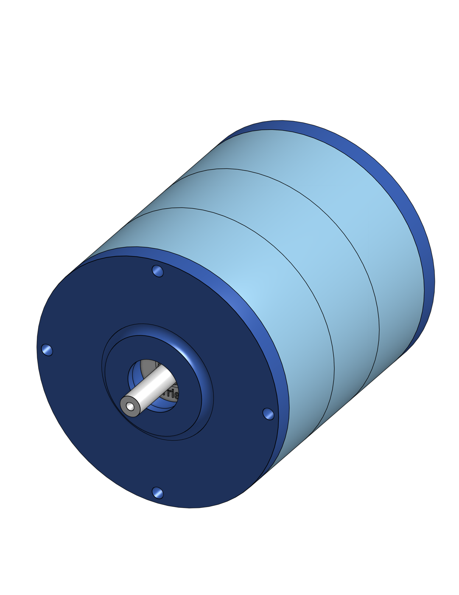
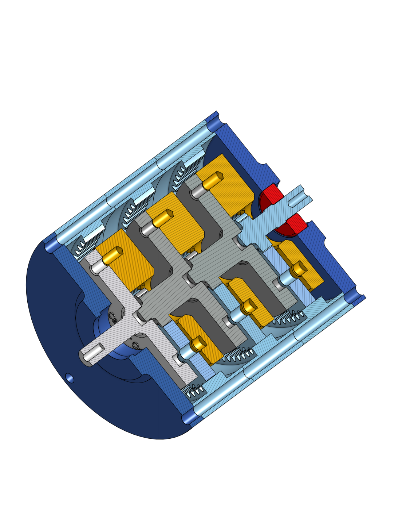
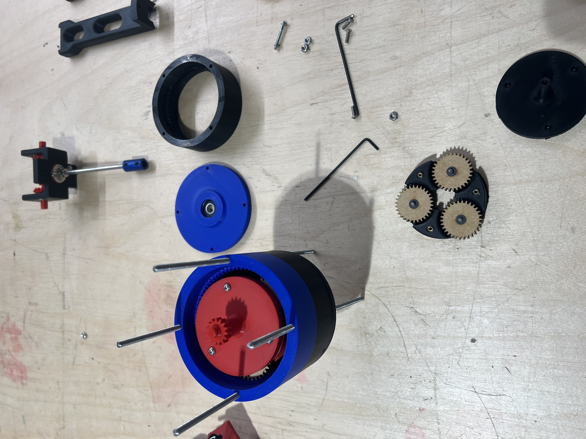
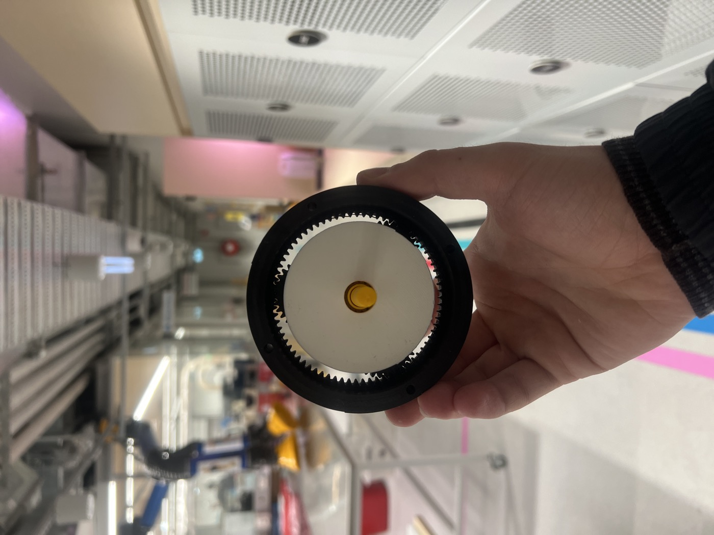

Overview
The brief required the design, manufacture, and assembly of a functional planetary gearbox using only 3D-printed components and standard hardware. The gearbox needed to be modular — stages could be stacked to increase the overall gear reduction — while remaining compact enough to hold in one hand.


SolidWorks renders — full assembly (left) and cross-section showing internal gear stages (right).
Design
Each stage consists of a sun gear, three planet gears, a planet carrier, and a fixed ring gear. The ring gear is integrated into the outer housing to minimise part count. Key design decisions:
- Involute gear tooth geometry calculated from module and tooth count to ensure correct mesh across stages
- Planet carrier designed with press-fit axle pins to hold planet gear positions under load
- Inter-stage spline interface allows stages to stack and lock axially without fasteners
- All clearances increased from theoretical values to account for FDM dimensional variation
- Output shaft supported by a printed bearing race to reduce wobble under load

All components laid out prior to assembly — sun gears, planet carriers, ring housings, and output stages.
Build & Assembly
All parts were printed in PLA on an FDM printer. The assembly process validated the tolerance decisions — fits that were too tight were identified and the relevant clearances updated in the model before reprinting. The final assembled gearbox ran smoothly by hand with no binding across all stages.

Assembled stage showing ring gear, output carrier face, and output shaft.